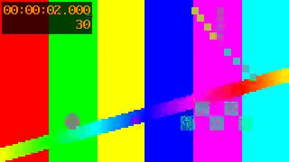

頁面背景
漸層：ffmpeg gradients, CC0
圖片
整頁鋪滿，黑色遮罩 0.6，文字在兩種主題下都用淺色。

影片檔
靜音自動播放，1 到 4 秒循環；開始播放前先墊著截圖。
YouTube
無 cookie 嵌入，沒有控制列；連不上時截圖留著。
測試圖樣：ffmpeg testsrc2, CC0
長頁
| 列 | 內容 |
|---|---|
| 第 1 列 | 表格疊在影片上，遮罩可以調到 0.9。 |
| 第 2 列 | 表格疊在影片上，遮罩可以調到 0.9。 |
| 第 3 列 | 表格疊在影片上，遮罩可以調到 0.9。 |
| 第 4 列 | 表格疊在影片上，遮罩可以調到 0.9。 |
| 第 5 列 | 表格疊在影片上，遮罩可以調到 0.9。 |
| 第 6 列 | 表格疊在影片上，遮罩可以調到 0.9。 |
| 第 7 列 | 表格疊在影片上，遮罩可以調到 0.9。 |
| 第 8 列 | 表格疊在影片上，遮罩可以調到 0.9。 |
| 第 9 列 | 表格疊在影片上，遮罩可以調到 0.9。 |
| 第 10 列 | 表格疊在影片上，遮罩可以調到 0.9。 |
| 第 11 列 | 表格疊在影片上，遮罩可以調到 0.9。 |
| 第 12 列 | 表格疊在影片上，遮罩可以調到 0.9。 |
| 第 13 列 | 表格疊在影片上，遮罩可以調到 0.9。 |
| 第 14 列 | 表格疊在影片上，遮罩可以調到 0.9。 |
| 第 15 列 | 表格疊在影片上，遮罩可以調到 0.9。 |
| 第 16 列 | 表格疊在影片上，遮罩可以調到 0.9。 |
| 第 17 列 | 表格疊在影片上，遮罩可以調到 0.9。 |
| 第 18 列 | 表格疊在影片上，遮罩可以調到 0.9。 |
| 第 19 列 | 表格疊在影片上，遮罩可以調到 0.9。 |
| 第 20 列 | 表格疊在影片上，遮罩可以調到 0.9。 |
| 第 21 列 | 表格疊在影片上，遮罩可以調到 0.9。 |
| 第 22 列 | 表格疊在影片上，遮罩可以調到 0.9。 |
| 第 23 列 | 表格疊在影片上，遮罩可以調到 0.9。 |
| 第 24 列 | 表格疊在影片上，遮罩可以調到 0.9。 |
沒有背景
一般頁面照網站主題。
雙語
Bilingual
- 中文在上 Chinese on top
- 英文在下 English below
| 遊戲 Game |
|---|
| 星海 StarCraft |
小標 Kicker
雙語
Bilingual